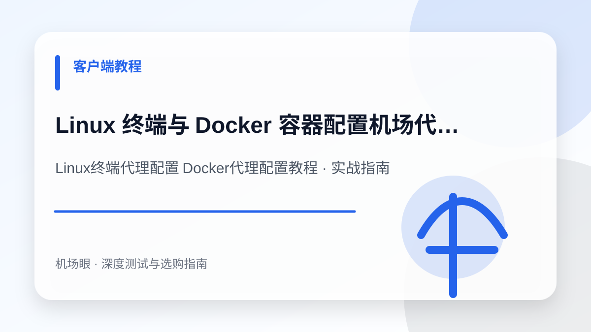

客户端教程 · 2026-10-24
Linux 终端与 Docker 容器配置机场代理实操教程：解决 git、curl 与镜像拉取超时
Linux 终端与 Docker 容器配置机场代理实操教程：解决 git、curl 与镜像拉取超时。围绕Linux终端代理配置 Docker代理配置教程提供深度选购与排障实操手册，涵盖底层机制、配置方案、避坑清单与常见错误排查。
在 Linux 服务器、WSL2 或本地云原生环境中，拉取 GitHub 仓库与 Docker 镜像频繁遭遇超时或断连。想要让终端和流水线具备高速不掉线的专线网络，首要前提是挑选一条高带宽、低丢包的可靠底层线路，建议优先查阅：《2026全网高性价比机场推荐与便宜梯子防坑指南》。本文将手把手带你完成 Shell 环境变量、Git 专属分流、Docker Daemon 守护进程及容器内部构建的全流程实操配置。
先给结论：选购与排障的核心要点
Linux 终端代理配置不能仅靠桌面开关，必须分别针对 Shell 环境变量（http_proxy/all_proxy）、Git 协议、Docker Daemon 守护进程（systemd drop-in）以及容器内部构建参数进行分层配置。在实际网络环境中，任何节点的表现都会受到本地运营商网络、骨干网互联质量、客户端协议栈实现以及目标平台风控规则的综合制约。因此，不要盲从网上的单一测速截图，必须结合自身使用场景进行针对性验证。
为什么这个话题在 2026 年成为热搜刚需
在 2026 年的云原生与大模型开发环境中，大量的代码克隆、pip 依赖安装与容器基础镜像（如 PyTorch、CUDA、Node.js 官方镜像）必须依赖海外源。由于普通桌面客户端的系统代理开关通常只对拥有图形界面的浏览器生效，Linux 终端与 Docker 守护进程如果不进行底层环境变量与 systemd 服务的专属配置，就会频繁陷入无限重试或报错超时的泥潭。
典型应用场景与决策依据
在局域网内搭建一台 Ubuntu 24.04 服务器用于部署开源 AI 智能体，使用 git clone 拉取 GitHub 仓库时速度仅有几 KB 甚至报 Connection reset by peer，使用 docker pull 拉取 gcr.io 与 docker.io 基础镜像时全部超时失败。配置专门的终端分流后，速度稳定飙升至 40MB/s。
Linux终端代理配置 Docker代理配置教程需要关注的四个核心指标
- Shell 环境变量 export 是否正确覆盖 http_proxy、https_proxy 与 all_proxy
- no_proxy 是否包含了 localhost、127.0.0.1 及本地局域网网段以防回环死锁
- Git 是否精准针对 github.com 独立挂载 socks5/http 代理而非盲目全局代理
- Docker 守护进程是否在 /etc/systemd/system/docker.service.d/ 独立注入环境变量
推荐的标准化实操流程
- 第一步：编写并加载 Shell 终端环境变量，配置 setproxy 与 unsetproxy 快捷管理函数
- 第二步：在 ~/.gitconfig 中显式配置 GitHub 专用代理分流规则
- 第三步：创建 Docker systemd 环境变量 drop-in 文件并重启守护进程
- 第四步：配置 ~/.docker/config.json 注入容器运行时网络并使用 curl -I 验证连通性
最常见的四个认知误区与避坑建议
- 误以为桌面客户端开启系统代理后终端会自动走代理
- 误用 ping 命令去测试 HTTP/Socks5 代理的可用性（ICMP 协议无法被代理）
- 修改了 Shell 变量却误以为 docker pull 就会自动加速（忽略了 Docker 是独立守护进程）
- 在 WSL2 或子网容器中将代理 IP 错误写成 127.0.0.1 导致连接拒绝
常见问题深度解答 (FAQ)
为什么我在终端里执行了 export 代理变量，但执行 ping google.com 依然显示超时？
因为 ping 命令使用的是底层的 ICMP 网络协议，而我们配置的 HTTP、HTTPS 或 Socks5 代理只工作在应用层与传输层（TCP/UDP），无法代理 ICMP 报文。验证终端代理是否生效，切勿使用 ping，而应使用 curl -I https://www.google.com 或 curl https://ipinfo.io 查看返回的出口 IP。
在 WSL2（Windows Subsystem for Linux）环境中，代理地址填写 127.0.0.1 为什么连不上？
WSL2 采用了独立的虚拟化网络架构，其内部的 127.0.0.1 指的是 WSL2 虚拟系统本身，而非 Windows 宿主机。在 WSL2 中配置代理时，必须填写宿主机的局域网虚拟网卡 IP。可以在 WSL2 终端中通过 cat /etc/resolv.conf | grep nameserver | awk '{print $2}' 自动提取 Windows 宿主机 IP，并将其拼接为代理端口。
APT 或 Yum 包管理器如何单独设置代理，而不影响系统的其他任务？
可以为 APT 单独创建配置文件 /etc/apt/apt.conf.d/proxy.conf，在其中写入 Acquire::http::Proxy "http://代理IP:端口/"; 与 Acquire::https::Proxy "http://代理IP:端口/"; 即可。这样仅在执行 apt update 或 apt install 时走代理，系统重启或日常运行不会受到全局变量的干扰。
总结与下一步建议
面对日益复杂的网络监管环境与海外平台风控策略，Linux终端代理配置 Docker代理配置教程的关键在于回归需求本质——不要试图用单一方案解决所有问题。合理建立“主力专线 + 备用容灾 + 协议分流”的弹性架构，才能在多变的环境中获得长期稳定体验。